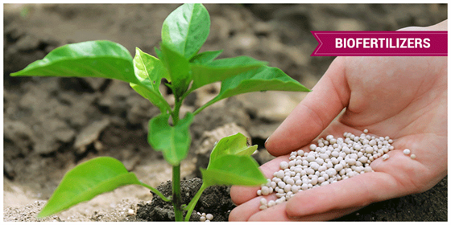
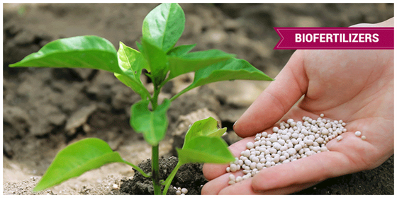

🧭 Purpose of the Visit
On August 29, 2024, scientists from ICAR-CICR Nagpur visited KVK Jalgaon Jamod to evaluate progress and provide technological guidance. Dr. Jayant Meshram and Dr. Shivaji Thube were welcomed by Hon. K.G. Ingle and Dr. V.G. Jadhao.
🔍 Key Activities
- Visited KVK farm, Azolla unit, nursery, crop cafeteria, and more.
- Interacted with farmers and KVK module units.
- Inspected the biofertilizer unit at Dhanora Jangam village.
✅ Outcomes & Recommendations
The ICAR scientists appreciated the initiatives taken by KVK and recommended adoption of advanced ICAR technologies to expand impact.

 
